Uniques¶
Unique items: fixed lines with rolled values, and their own drop sources.
Unique items are repaired only at a Runic Anvil or a Rune Carver Table: each repair costs 5 Azurite Dust and restores full durability.
Jewels (24)¶
| Name | Effect | How to get | |
|---|---|---|---|
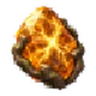 |
Amber of the First Root | one of 8 stats one of 8 stats |
dropped by The Elder |
| Barrow Volley | All your summoned Skeletons become Skeleton Archers | drops anywhere from the Swamp (item level 43) | |
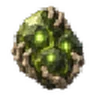 |
Choir of the Unburied | Small Passives in Radius grant their effects without being allocated Notable Passives, Mastery Notables and Masteries in Radius are switched off |
dropped by Bonemass |
| Circlet of Emerald Flame | Passives in a (Medium – Very Large) Ring around this socket can be Allocated without being connected to your tree (-5–-15)% to Fire, Cold and Lightning Resistance |
dropped by Fader | |
| Dead Crown Shard: Breath | (3–5)% increased maximum stamina per Dead Crown Shard set into the tree, this one included | dropped by Yagluth | |
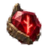 |
Dead Crown Shard: Flesh | (3–5)% increased maximum health per Dead Crown Shard set into the tree, this one included | dropped by Yagluth |
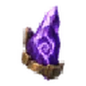 |
Dead Crown Shard: Spirit | (3–5)% increased maximum eitr per Dead Crown Shard set into the tree, this one included | dropped by Yagluth |
| Dead Crown Shard: Veil | (3–5)% increased rune shield per Dead Crown Shard set into the tree, this one included | dropped by Yagluth | |
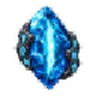 |
Eye Between Worlds | Gazes through the worlds to gear.pick.rift, and the way opens | drops in rune monolith events (not corrupted ones): from their defenders, and with a 5% chance when you win one; in the Hall of Three Monoliths on a halls map (5% with each won trial) |
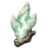 |
Flame Without a Burial | If no Notable Passives are Allocated in Radius, your Ignites deal Spirit damage instead of Fire damage | drops anywhere from the Plains (item level 97) |
| Heart of the Elder Runes | One of: (25–100)% increased Effect of Small Passives in Radius / (25–100)% increased Effect of Notable Passives in Radius | dropped by Rungard, the Thousand-Faced Warden | |
| Heart of the Fallen Runes | 3 × Passives in Radius can become a random theme Passives | dropped by Morgrim, the Shattered Lord | |
| Heart of the Mountain Mother | You can allocate passives from the starting point of the another random path path | dropped by Moder | |
| Hugin's Memory | If no Notable Passives are Allocated in Radius, when you kill a Rare or Unique monster, you gain one of its Modifiers for 20 seconds | drops anywhere from the Plains (item level 97) | |
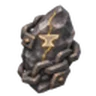 |
Oath of Iron | If no Notable Passives are Allocated in Radius, your Endurance also reduces the durability your Equipment loses from incoming damage | drops anywhere from the Plains (item level 97) |
| Seidr of the Silent | All your summoned Skeletons become Skeleton Mages that cast Fireballs | drops anywhere from the Mountain (item level 77) | |
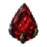 |
Tear of the Mist Mother | (0–100)% increased Effect of Jewel Socket Passive Skills containing Corrupted Magic Jewels | dropped by Mist Mother |
| The Empty Throne | If no Notable Passives are Allocated in Radius, you can have only 1 summoned Skeleton. It deals ×2 Damage, has ×2 Health and counts as your Companion | drops anywhere from the Plains (item level 97) | |
| Three Faces of Delusion | 3 × Adds a random notable | drops in the Mistlands | |
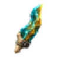 |
Trail of the First Antler | one of 10 stats | dropped by Eikthyr |
| Wandering Hearth | If no Notable Passives are Allocated in Radius, burning, getting wet, cold and damage do not switch off your Comfort | drops anywhere from the Plains (item level 97) | |
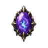 |
Whisper of Niflheim | Passives in Radius of a random keystone can be Allocated without being connected to your tree | dropped by The Queen |
| Winter's Debt | If no Notable Passives are Allocated in Radius, 30% of Damage from Enemy Hits against you is dealt to you evenly over 3 seconds instead | drops anywhere from the Plains (item level 97) | |
| Womb of Corruption | Allocates a random keystone One of: (10–20)% less Damage / (10–20)% less Armour, Evasion Rating and Rune Shield / (10–20)% less Maximum Health / (10–20)% less Maximum Eitr / (10–20)% less Movement Speed / (10–20)% less Maximum Stamina |
from a creature, elite or boss killed in the Blight Mist, 0.2% each (loot) |
Weapons (12)¶
| Name | Effect | How to get | |
|---|---|---|---|
| Bell Beneath the Mountain | Your sceptre's alternative attack is replaced by Mountain Bell Weapon hits on your Mountain Bell ring it, dealing (40–60)% of the hit's damage and build-ups to enemies around it Each Mountain Bell reserves 35% of maximum eitr (15–25)% increased area of effect (20–30)% increased stagger duration |
dropped by Moder | |
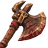 |
Blood Debt | Restore (5–8)% of maximum health on fully breaking an enemy's armour (4–6)% increased armour break build-up with axes per 10 points of current rage ×0.7 life leech from physical attack damage (30–50)% increased bleed damage (20–30)% increased bleed chance (20–30)% increased damage against bleeding enemies |
drops anywhere from the Mountain (item level 77) |
| Censer of the Forgotten Name | Leech of spirit damage restores rune shield instead of health ×0.7 rune shield recharge +(1–2)% health leech with spirit damage +(20–30)% leech rate +(10–15)% spirit resistance |
drops from blighted creatures killed in the Blight Mist; in each chest of the Blighted Hall on a halls map (20%) | |
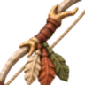 |
Fletcher's Testament | +(50–150)% equipment affix effect from equipped quiver | drops anywhere from the Swamp (item level 43) |
| Four Voices of the Forge | (15–25)% increased crossbow damage per type of bolt fired in the last 10 seconds 100% chance to reload instantly after switching ammunition type (cooldown 6 s) (20–30)% increased projectile speed (10–15)% chance to save arrow or bolt on shot |
found in the treasure chests of: Infested Mine | |
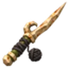 |
Gravedigger's Needle | Critical hits consume the target's bleeding, dealing (20–30)% of its remaining damage at once with knives (30–50)% increased bleed damage (20–30)% increased bleed chance (30–50)% increased critical strike chance against bleeding enemies |
dropped by Brenna; found in the treasure chests of: Sunken Crypts |
| Knuckles of the Thunderer | Gain (20–30)% of physical damage as extra lightning damage ×2 shock build-up on your next attack after a dodge ×0.8 shock duration (20–30)% increased shock build-up (10–15)% reduced dodge stamina cost |
dropped by Eikthyr | |
| Oath of Embers | Gain (15–25)% of physical damage as extra fire damage (30–40)% increased burning build-up (30–40)% increased burning damage +(15–25)% fire resistance |
dropped by Lord Reto | |
| Song of the Reed | (40–60)% increased ailment build-up with arrows (20–30)% increased poison duration (20–30)% increased damage against poisoned targets +1 targets pierced by arrows against poisoned targets |
drops anywhere from the Black Forest (item level 19) | |
| Staff of the Lower Sky | 10% of the shock build-up of your hits also applies to you (8–12)% increased lightning damage per 10% of shock on you Being wet does not lower your lightning resistance (30–50)% increased shock build-up against wet targets (20–30)% increased shock duration (20–30)% increased presence radius |
drops in rune monolith events (not corrupted ones): from their defenders, and with a 5% chance when you win one; in the Hall of Three Monoliths on a halls map (5% with each won trial) | |
| The Last Rank | +3 targets pierced by spears with echo strikes 30% more damage for each target already pierced by spears, up to ×2.2 with echo strikes (20–30)% increased strike damage (20–30)% increased stagger build-up |
dropped by Lord Reto; found in the treasure chests of: Fortresses (Ashlands) | |
| Victor's Right | Hits consume a fully broken armour and deal 50% more damage with swords (20–30)% increased damage against enemies with broken armour (30–50)% increased critical strike chance against enemies with broken armour (20–30)% increased armour break duration |
drops anywhere from the Plains (item level 97) |
Armour (10)¶
| Name | Effect | How to get | |
|---|---|---|---|
| Breach Stride | 100% chance to attack without spending stamina (15–25)% increased movement speed on stagger recently (4 s) (20–30)% increased stagger build-up (8–12)% increased maximum stamina |
drops anywhere from the Mountain (item level 77) | |
| Cloth Without a Table | Restore (10–15)% of maximum stamina when a mead's effect ends (20–30)% increased consumed mead duration +2% fire resistance per active mead effect (up to 5), +2% frost resistance per active mead effect (up to 5), +2% lightning resistance per active mead effect (up to 5) (10–15)% increased consumed mead effect +(10–15)% poison resistance |
drops anywhere from the Black Forest (item level 19) | |
| Covenant of the Unbroken | +1 rune shield per 100 points of current durability of the body armour Damage absorbed by rune shield wears your body armour instead of hit wear: 1 durability per 20 absorbed (15–25)% increased health regeneration +(15–25)% stagger resistance |
dropped by Rungard, the Thousand-Faced Warden | |
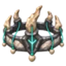 |
Crown of the Last Shepherd | Links can target your minions Maximum links equal your Limit (30–50)% increased maximum health for minions (20–40)% increased damage for minions Minions regenerate (1–2)% of maximum health per second |
drops in rune monolith events (not corrupted ones): from their defenders, and with a 5% chance when you win one; in the Hall of Three Monoliths on a halls map (5% with each won trial) |
| Forge Beneath the Ribs | (15–25)% of fire damage taken is recovered as health over 4 s (20–30)% increased health regeneration while burning ×0.8 rune shield +(15–25)% fire resistance (20–30)% increased burning damage (8–12)% increased maximum health |
dropped by Yagluth | |
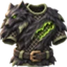 |
Hide of the Second Wind | Restore (4–6)% of maximum health over 2 s on evade (cooldown 2 s) ×1.3 endurance while a restoration over time is active (8–12)% increased maximum health (10–15)% reduced dodge stamina cost |
drops anywhere from the Swamp (item level 43) |
| Hood of Two Sentences | +1 curse limit ×0.65 curse effect (20–30)% increased curse effect duration (8–12)% increased maximum eitr (20–30)% increased ailment build-up against cursed targets |
drops from blighted creatures killed in the Blight Mist; in each chest of the Blighted Hall on a halls map (20%) | |
| Silence of the Source | +(0.15–0.25) rune shield per point of reserved eitr ×0.7 eitr regeneration (20–30)% increased effect duration (10–15)% increased maximum eitr (15–25)% increased aura area of effect |
drops anywhere from the Mistlands (item level 130) | |
| Tracks Above the Snow | (30–50)% increased projectile speed while airborne Restore (8–12)% of maximum rune shield on landing after at least 2 s in the air (cooldown 5 s) (10–15)% increased jump height (10–15)% reduced jump stamina cost |
dropped by Geirrhafa, Moder | |
| Underside of the Storm | −1 s rune shield recharge delay while wet (30–50)% increased rune shield recharge while wet ×0.8 frost resistance +(15–25)% lightning resistance (20–30)% increased eitr regeneration while wet |
drops anywhere from the Mistlands (item level 130) |
Rings (9)¶
| Name | Effect | How to get | |
|---|---|---|---|
| Circlet of Frozen Embers | (20–30)% increased fire damage against frozen targets (20–30)% increased frost damage against burning targets +12% execute threshold of fire hits against frozen enemies +15% chance for cold hits to freeze burning enemies at once +(10–15)% fire resistance +(10–15)% frost resistance |
dropped by Geirrhafa | |
| Ember Under the Tongue | ×0.5 burning duration on the bearer (25–40)% of poison damage taken is taken as fire damage +(10–15)% fire resistance (20–30)% increased burning build-up (15–25)% increased health regeneration while burning |
dropped by Yagluth | |
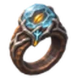 |
Grain Beneath the Ice | Restore (3–5)% of maximum eitr on kill a frozen target Restoring eitr while it is full fills the rune shield instead ×0.8 chill duration (20–30)% increased chill build-up (8–12)% increased maximum eitr |
dropped by Moder |
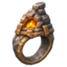 |
Hearth in the Pocket | (1–2)% increased health regeneration per point of comfort +(1–5) comfort level ×0.8 Rested duration (1–2)% increased stamina regeneration per point of comfort (1–2)% increased eitr regeneration per point of comfort |
drops anywhere from the Swamp (item level 43) |
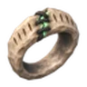 |
Memorial Knot | Restore (4–6)% of maximum health over 3 s when your minion is killed (cooldown 2 s) Minions on low health deal ×1.2 damage (20–30)% increased maximum health for minions (20–30)% increased damage for minions |
dropped by The Queen |
| Salt of the Shared Wound | (15–25)% of damage taken through a link is recovered as health over 4 s (15–25)% increased health regeneration for linked allies while a restoration over time is active ×0.8 healing effect (8–12)% increased maximum health +(15–25)% link range |
drops in rune monolith events (not corrupted ones): from their defenders, and with a 5% chance when you win one; in the Hall of Three Monoliths on a halls map (5% with each won trial); dropped by Thungr, Zil | |
| Tear of the Reverse Rain | The effects of Wet on you are inverted +(30–50)% inflicted wet effect (15–25)% increased eitr regeneration while wet +(10–15)% frost resistance |
drops anywhere from the Swamp (item level 43) | |
| Thorn Within the Band | (20–30)% of thorns damage also builds armour break ×1.3 thorns against enemies with broken armour (20–30)% increased thorns (20–30)% increased armour break duration |
dropped by Bonemass | |
| Unread Verdict | Your curses on the slain enemy move to the nearest enemy in your presence on kill a cursed target Transferred curses keep (40–60)% of their remaining duration ×0.8 curse effect (20–30)% increased curse effect duration (15–25)% increased presence radius |
drops from blighted creatures killed in the Blight Mist; in each chest of the Blighted Hall on a halls map (20%) |
Belts (4)¶
| Name | Effect | How to get | |
|---|---|---|---|
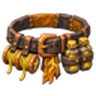 |
Cord of Belated Thunder | ×1.5 area of effect with mines ×1.5 ailment build-up with mines for every second mine of a detonation chain ×1.5 delay with mines (20–30)% increased damage with mines (10–15)% increased bomb area of effect |
found in the treasure chests of: Infested Mine |
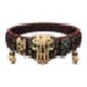 |
Hel's Tribute | When you kill a Rare monster, you gain its Modifiers for 60 seconds | drops anywhere from the Black Forest (item level 25) |
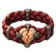 |
Knot of the Last Pulse | (30–50)% increased trinket effect at low life Restore (5–8)% of maximum health over 3 s on trinket activation (cooldown 2 s) ×0.5 healing effect (8–12)% increased maximum health +(20–30)% endurance at low life |
drops anywhere from the Mountain (item level 77) |
| Kvasir's Blood | +(1–3) mead slots whose meads are drunk automatically (-30–-50)% to all Resistances 25% increased duration of meads in belt slots 25% increased potency of meads in belt slots |
drops anywhere from the Mountain (item level 80) |
Shields (3)¶
| Name | Effect | How to get | |
|---|---|---|---|
| Door Without a Threshold | (3–5)% of current rune shield is spent on block Spent rune shield is added to your next hit within 3 s as spirit damage ×0.8 rune shield recharge (20–30)% increased spirit damage (10–15)% reduced block stamina cost |
dropped by Morgrim, the Shattered Lord | |
| Millstones of the Thornwall | (10–15)% increased thorns per block in the last 4 s (up to 5) With the shield up: your knockbacks pull enemies towards the source of the impulse; for a slam that is the centre of its area. Knockback power strengthens the pull. Immunity to displacement is kept. (30–50)% increased thorns (10–15)% reduced block stamina cost (20–30)% increased knockback |
dropped by Bonemass | |
| Moment Between Runes | Rune shield recharge starts on parry Rune shield recharge is not interrupted for 1 s on parry (15–25)% increased parry window (20–30)% increased rune shield recharge |
found in the treasure chests of: Frost Caves |
Tools (1)¶
| Name | Effect | How to get | |
|---|---|---|---|
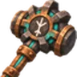 |
Hammer of the Patient Master | Ballistas restore (1–2)% of maximum durability per second while not firing (20–30)% increased ballista reload speed at full durability ×0.8 ballista damage (20–30)% increased ballista ailment build-up +(10–15)% chance for ballista bolts to be saved |
found in the treasure chests of: Fortresses (Ashlands) |
Quivers (1)¶
| Name | Effect | How to get | |
|---|---|---|---|
| Quiver of Two Hunts | Each projectile fired takes the next ammunition cell of the worn quiver in turn ×1.4 ailment build-up for projectiles with other ammunition than the previous one ×1.2 damage for projectiles with the same ammunition as the previous one ×0.8 draw and reload speed, ×0.8 crossbow reload speed (20–30)% increased projectile speed (10–15)% chance to save arrow or bolt on shot |
drops anywhere from the Mountain (item level 77); dropped by Thungr, Zil |
Data from Path of Valheiman 6.0.12, extracted 2026-11-13.